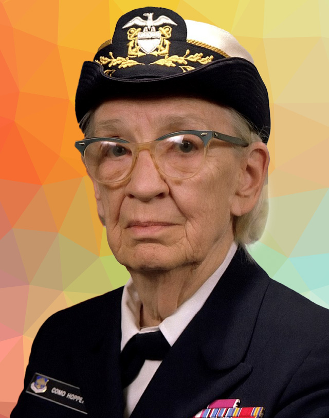
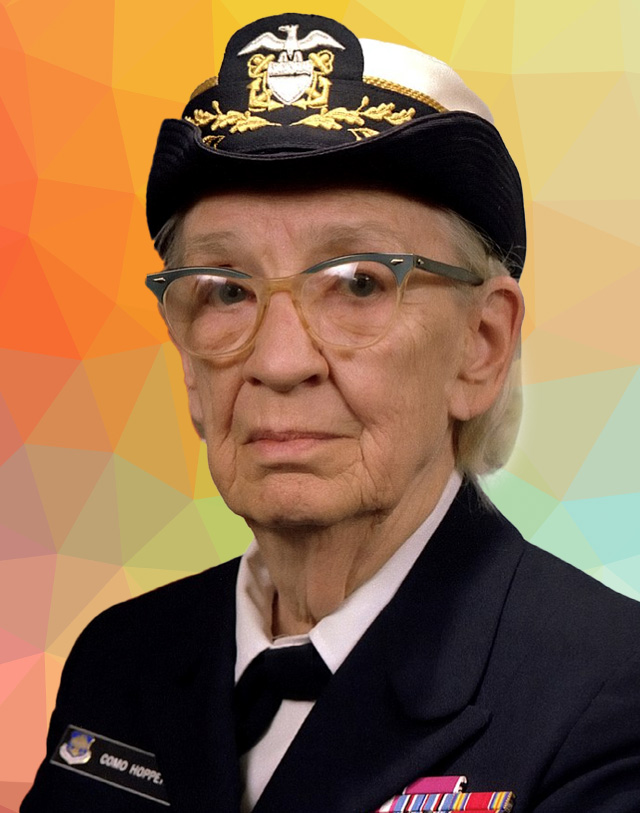

INFORMÁTICOS FAMOSOS
 

Alan Turing
Desarrolló conceptos que sentaron las bases de los ordenadores actuales.
VOLVER AL INICIO:
Grace Hopper
Famosa por desarrollar el primer compilador para un lenguaje de programación.
VOLVER AL INICIO:
Tim Berners-Lee
Inventó la World Wide Web y desarrolló los conceptos de URL, HTTP y HTTPS.
VOLVER AL INICIO: